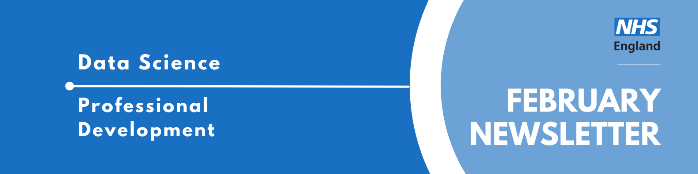

Professional Development Newsletter February 2024

Welcome to the latest Professional Development newsletter, brought to you by the Data Science skilled team Professional Development Capability team - now in a new format!
The newsletter team are always happy to receive constructive feedback, and we invite you to send us any contributions you may have.
There are some legacy NHS Digital items which we have identified with❗
If you cannot access something of interest to you, please reach out.
Thanks for reading! – PD newsletter team
Highlights
Your Professional Development - Job Descriptions
When preparing for future career opportunities here at NHSE, it’s a good idea to understand the job descriptions for each role you hope to apply for.
Take a look at the current data science job descriptions saved on Confluence which detail the requirements and expectations for the various roles we may look to recruit for in the team. These will be used for recruitment in the immediate future.
Familiarising yourself with these specifications can help you shape your professional development plans and tailor the training opportunities you seek out.
Please note that in the longer term these job descriptions may change to be aligned to the National Competency Framework and this will be communicated to the team.
Health and Care Analytics Conference 2024 - Call for Abstracts
Have some interesting work to share? The HACA Conference 2024 is officially accepting applications to present (in the form of a talk or poster) at the 2024 conference, hosted 23rd-24th July at Telford International Centre. The deadline to submit is Thursday February 29th 2024. Check out the HACA 2024 Confluence page❗ to see the steps and track submissions.
Events
Lots of exciting things coming up! See the full calendar here❗
Severe Mental Illness & Physical Disease
Thursday 29th February 10:00 - 13:00, Online
Hosted by researchers at the Usher Institute, The University of Edinburgh, with contributions from DataMind, the Health Data Research Hub for Mental Health we will hear from researchers working on projects relating to severe mental illness and receipt of cardiovascular care as well as people with lived experience, clinicians and public health and government representatives.
Making a difference: Using Data to Improve Care
Thursday 29th February 2024 13:00 - 16:00, Online
Join us for the HDR UK Midlands & Health Innovation East Midlands Insight Sharing Webinar. Highlights include: Dementia and the correlation with cardiovascular diseases, Leveraging administrative healthcare data to enhance drug approval in rare disease, EU data infrastructure for Rare Disease.
What Career? Live
Friday 1st and Saturday 2nd March, NEC Birmingham
NHS Health Careers is looking for people to help inspire students to join the NHS by attending this national careers event. If you’re interested, email Laura Monks by Monday 26th February .
Policy Making for the Age of AI
Wednesday 6th March, 18:30, King’s College London
The sixty-eigth Strand Group will take place at 18.30 on Wednesday 6th March 2024 when Sarah Munby, Permanent Secretary of the Department for Science, Innovation and Technology, will give her second lecture as Visiting Professor on ‘Policy Making in the Age of AI.’
The politics and philosophy of AI
Tuesday 19th March 2024 18:30 to 20:00, London School of Economics & Online
As artificial intelligence (AI) moves beyond the realm of science fiction, it is already having a profound impact on our economies, societies and politics. To make sense of the transformative power and disruptive potential of AI, we are joined by thinkers at the cutting edge of the technological frontier for an in-depth discussion of its multifaceted impact. Speakers include the ‘godfather of AI’, Geoffrey Hinton; Kate Vredenburgh, Assistant Professor in the Department of Philosophy, Logic and Scientific Method at LSE and Robin Archer, the Director of the postgraduate programme in political sociology and the Director of the Ralph Miliband Programme at LSE.
Digital Footprints 2024
Wednesday 8th May 1pm – Thursday 9th May 4pm, University of Bristol
Focusing on digital footprints data for social impact, inviting innovative research that harnesses the potential of these novel datasets to address pressing societal challenges and drive positive change. The conference is organised by Turing Novel Data Linkage for Health and Wellbeing Interest Group.
Please note attendance of the conference is subject to a £50 fee.
See more future events on our confluence calendar❗
Know of any events we should feature next month? Let us know by clicking the “Contribute” button, or here.
Knowledge Sharing
Refactoring Golden Rules
Are you wondering how you can make your code faster, easier to read, and easier to reuse? Getting your code to work is just the first step! After that, you should refactor your code to make it higher quality - more efficient, more robust, more maintainable. But how do you do that? Well, you can start by reading the refactoring golden rules on the RAP Community of Practice website!
Stay tuned for an update on what seminars & show and tells will look like in the new team. Please bear with us as it is likely to be a learning process! Contact Mia Noonan for more information..
Training Opportunities
Applications for the NIHR Health Service Modelling Associates now open
This free, 15-month course teaches people how to use Operational Research and Data Science techniques to improve services and aid decision making.
The free course requires a time commitment of one day a week for the full programme. All code in the course is in Python, though some other open-source software will be used too - but no prior experience with Python (or any programming experience at all!) is required.
See the FAQs and direct any further questions to penchord@exeter.ac.uk and s.j.rosser@exeter.ac.uk.
Applications for the course close on the 4th of March 2024, with the course beginning Monday 15th April 2024.
Become a STEM ambassador
STEM Ambassadors help young people to understand the real world applications of their learning. Attend an information session on Thursday 22nd February to learn more.
Stakeholder Mapping Resources
This guidance includes a helpful template and further resources to help you map stakeholders for user engagement.
Pluralsight
Tim Roebuck announced that following delays to resolve contractual issues for a new contract, access has been restored for existing Pluralsight users, and you should been able to continue any previous training.
Improve your Markdown by contributing to the Data Science website!
Ever wanted to try your hand at learning Markdown but never really found a reason? Check out this Markdown tutorial and then try your hand at it by helping improve the newly launched Data Science website.
| We launched the prototype Data Science website - but we need your help. We need your contributions (see how to do this here), in particular: - Send us a summary of your project (see this example) - Follow this template. - Contribute an article to the blog. - Volunteer to pick up an issue on GitHub. - Give us feedback about the website. With the conference season approaching, something up on the web can be useful to point people towards! |
Check out all the resources in the Training Brochure! Can you spot something missing? Contact us!